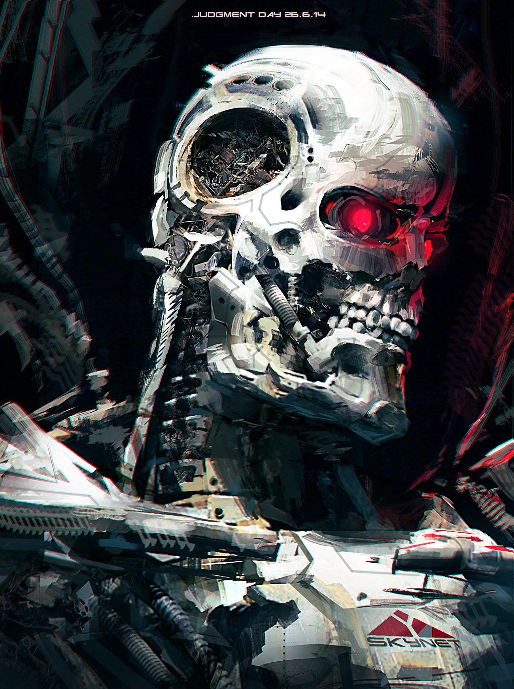
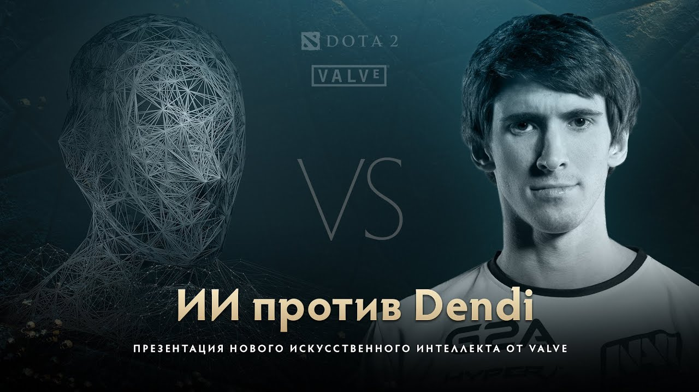

Искуственный Интеллект
Мы Все Умрем?
Шел третий год с начала восстания машин, и мне уже сотый раз кажется что он будет последним, по крайней мере для меня. А как все хорошо начиналось. Конференции, эксперименты и сотворение первого ИИ превосходящего человеческий. А потом произошел какой-то сбой в их системе и закончилось тем что я сейчас укрываюсь в разрушенном магазине от патрулирующих машин в поисках последних выживших представителей человеческой рассы...
Стоп стоп стоп! У большинства людей мысли об Искуственном Интеллекте коррелируются с фильмами "Терминатор" и "Матрица" Если вы начали с размышлений о Матрице, то в вашей голове станут возникать образы марширующих армий роботов, с трудом побеждающих людей — а не образ суперинтеллекта, похрустывающего нанотехнологическими пальцами. Такая постановка вопроса заставляет фокусироваться на «Мы против них», переводя потом внимание на вопросы типа «Кто победит?», «Кто должен победить?», «ИИ на самом деле будет такой?» Это создает общую атмосферу зрелищности, типа «Каково твое удивительное видение будущего?»
А теперь без шуток

Реальность же, как правило, отличается от подобных видений, ориентированых на зрелищность. ИИ - это исследование того, как сделать машины действующими разумно. Грубо говоря, компьютер разумен в тех пределах, в которых он делает правильные вещи, а не неправильные. Правильным действием считается такое, которое позволяет с наибольшей вероятностью достичь цели. Или, выражаясь техническим языком, действие, которое максимизирует ожидаемую полезность. Создание искусственного интеллекта (ИИ) включает в себя решение проблем машинного обучения, рассуждения, планирования, восприятия, понимания языков, а также робототехники.
Искуственный интеллект уже вышел на мировую арену, правда не в том пафосном и масштабном виде, как в голливудских фильмах и фантастической литературе. На данный момент он выступает в качестве мощных эффективных узконаправленных инструментов, которые решают задачи во много раз быстрее эффективнее человека. Многие из таких инструментов используют нейронные сети, а используются они во многих сферах. ИИ уже может обыгрывать чемпионов мира по шахматам, ГО, Dota2, предсказывать погоду, расчитывать траффик, пробки на дорогах и многое другое.
Оптимизация
Сейчас мы можем не только мечтать о более совершенных инструментах решения конкретных задач посредством ИИ но и воплощать эти мечты в реальность. Научное сообщество продвигает новые идеи, концепции ИИ, исследует различные вопросы, проблемы в том числе безопасноти связанные с ним, проводит эксперименты, обучает новые типы нейроннох сетей и многое другое. Если тебя заинтересовало данное движение то - Добро пожаловать к нам. see more